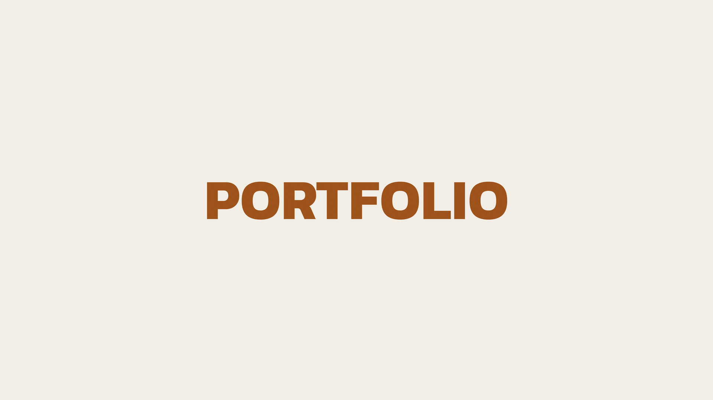

1. URBANIZING SAND
URBANIZING SAND : Textile Piece
1. CUT - CONNECT - HEAL
ICON
2. HIVE PARK
3. ISOLATION
4. SHELL HOUSE
1. Untitled : (Self-Portrait)
2. Relics of the Self
3. The Colours of Light
4. ‘Hearts like Ours’